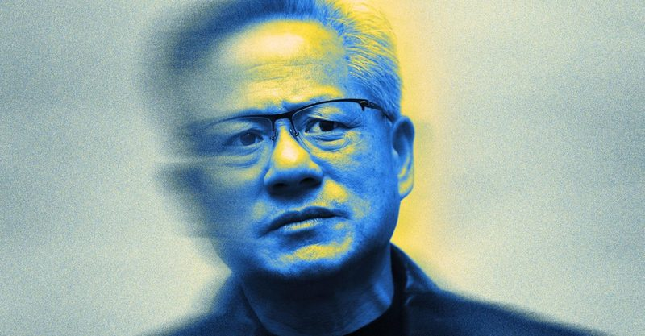
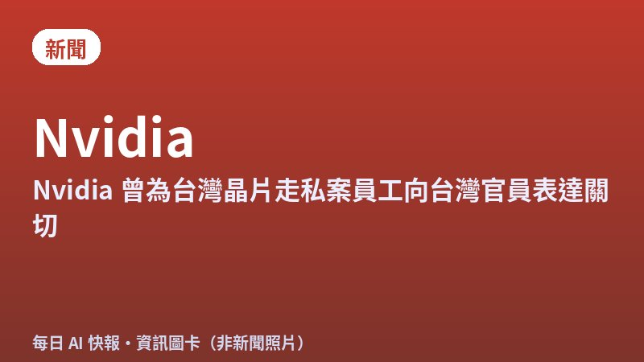
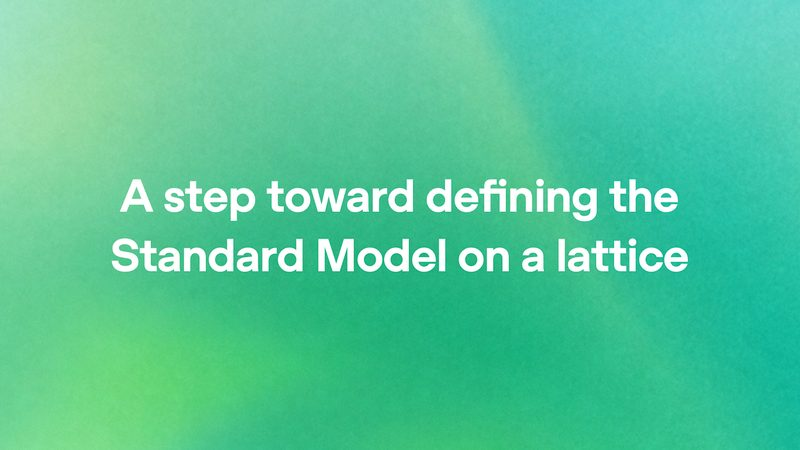
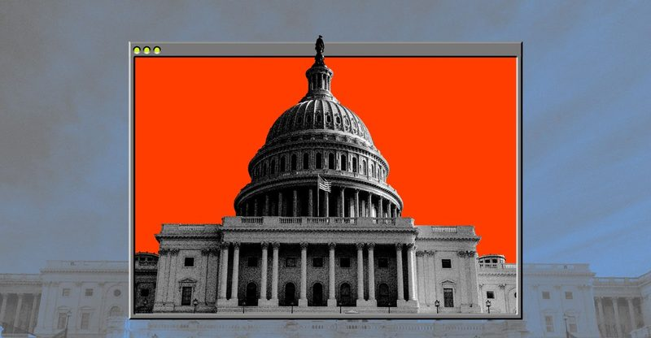
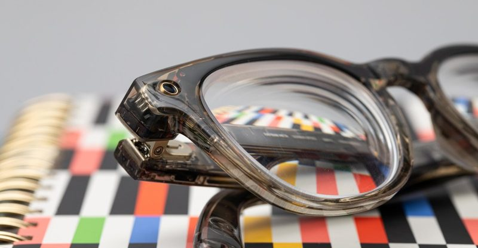

📋 2026/11/16（一） 共 6 則 黃仁勳傳考慮回任 Nvidia 執行長 Nvidia 曾為台灣晶片走私案員工向台灣官員表達關切 OpenAI 開設科學部落格，首篇是 AI 協助的標準模型研究 美國國會跨黨派要收緊 AI 晶片出口 Apple 智慧眼鏡傳 2027 年 WWDC 發表 AI 失敗專案清單：約 42% 企業 AI 計畫最後被放棄 
圖：The Verge 插圖 新聞 #1 黃仁勳傳考慮回任 Nvidia 執行長 英國《金融時報》11 月 15 日（週日）引述知情人士報導，11 月 12 日辭去 Nvidia 執行長的黃仁勳，已與親信討論回任的可能；一位盟友說正在召集矽谷高層組成「作戰室」，並會爭取白宮支持。要求董事會讓他回來的公開連署，TechCrunch 11 月 14 日統計已超過 11.5 萬人簽名，Elon Musk、Epic Games 執行長 Tim Sweeney 都在列。
💡 跟你有什麼關係： Nvidia 是 AI 晶片最大供應商，台灣供應鏈與很多人的股票、ETF 都跟它連動；領導人到底回不回來，會影響市場對 Nvidia 後續經營的信心。
⚠️ 目前只是報導，Nvidia 未證實；黃仁勳不持有控制性股權，無法推翻董事會決定。The Verge 也指出連署名單難以查證，出現明顯假名；同一篇 FT 報導中盟友坦承「與下屬發生婚外情可以開除」。
📰 原始來源：The Verge（2026-11-15，引《金融時報》） ↗ 
圖：Bloomberg News 新聞 #2 Nvidia 曾為台灣晶片走私案員工向台灣官員表達關切 Bloomberg 11 月 15 日引述知情人士報導，Nvidia 曾就旗下一名張姓經理 7 月在台灣被捕一事，向台灣政治人物表達關切。這名經理 8 月被起訴偽造文書與背信，檢方稱他是把 74 台搭載 Nvidia 晶片的伺服器走私到中國的「核心人物」。
💡 跟你有什麼關係： 這是發生在台灣的案子，牽涉高階 AI 晶片出口管制；在黃仁勳風波下，外界正在檢視 Nvidia 對亞洲經銷管道的把關，台灣的執法與供應鏈也會被放大檢視。
⚠️ 報導來自匿名知情人士，Bloomberg 原文多數內容需訂閱，細節以公開部分為準；本則找不到可用的新聞照片，改用資訊圖卡。
📰 原始來源：Bloomberg News（2026-11-15，經 Bloomberg Law） ↗ 
圖：OpenAI 研究 #3 OpenAI 開設科學部落格，首篇是 AI 協助的標準模型研究 OpenAI 11 月 15 日開設科學部落格，讓科學家分享用 AI 做研究的成果與方法。首篇客座文章由加州大學聖塔芭芭拉分校物理學家 Nathaniel Craig 撰寫，說明他與 GPT-6 Astra 合作，為粒子物理的標準模型提出一個在晶格（把時空切成格點）上的非微擾定義候選方案，詳細證明由 Astra 主導發展。
💡 跟你有什麼關係： 這顯示 AI 已開始參與最基礎的科學研究，不只是寫程式或整理資料；未來新藥、新能源這類突破，背後可能都有 AI 一起推導。
⚠️ Craig 自己強調這只是候選方案，需要學界進一步討論驗證，目前偏理論，離實際模擬還有很長距離；研究由三位晶格場論專家協助檢查。
📰 原始來源：OpenAI（2026-11-15） ↗ 
圖：Cath Virginia／The Verge；Getty Images 政策 #4 美國國會跨黨派要收緊 AI 晶片出口 The Verge 11 月 15 日報導，黃仁勳與疑似中國間諜的關係曝光後，美國民主、共和兩黨議員都表態支持收緊 AI 晶片出口，並要求黃仁勳等 Nvidia 高層到國會作證。參議院銀行委員會主席 Tim Scott 已發信給黃仁勳與商務部長 Lutnick；眾議院議長 Mike Johnson 表示國會對限制晶片輸出中國的共識正在增加。
💡 跟你有什麼關係： 出口規定一旦變嚴，Nvidia 與台灣代工、伺服器廠的出貨對象都可能受影響，也會牽動 AI 伺服器相關股票。
⚠️ 目前是表態與重提法案階段，例如 2025 年 4 月提出、卡在參議院的《Remote Access Security Act》，The Verge 也說它未必會成為法律。
📰 原始來源：The Verge（2026-11-15） ↗ 
圖：Amelia Holowaty Krales／The Verge 新聞 #5 Apple 智慧眼鏡傳 2027 年 WWDC 發表 Bloomberg 記者 Mark Gurman 11 月 15 日在 Power On 電子報報導，Apple 第一款智慧眼鏡（代號 N50）預計 2027 年 6 月 WWDC 發表、年底前出貨。眼鏡沒有擴增實境顯示，主打新版 Siri AI 操作 iPhone 上的 App，例如叫車、訂位、點咖啡；原型比 Meta 第二代 Ray-Ban 眼鏡稍薄，有 Wi-Fi，但多數功能仍靠 iPhone。
💡 跟你有什麼關係： 如果你在考慮買 Meta 這類 AI 眼鏡，可以知道 Apple 的版本大約一年半後才會上市，而且會跟 iPhone 綁得很緊。
⚠️ 這是消息人士報導，Apple 未公布；規格與時程都可能改變。圖為 The Verge 拍攝的 Meta 第二代 Ray-Ban 眼鏡，用來對照，不是 Apple 產品。
📰 原始來源：The Verge（2026-11-15，引 Bloomberg） ↗ 圖：RiverNorthPhotography／Getty Images，經 TechCrunch 觀點 #6 AI 失敗專案清單：約 42% 企業 AI 計畫最後被放棄 TechCrunch 11 月 14 日整理「AI 墓園」清單，引用 S&P Global Market Intelligence 數據指出，約 42% 的企業 AI 計畫最終被母公司放棄。清單包括 10 月申請破產的 Character.ai、11 月 6 日停服的家庭助理 Ollie、OpenAI 停掉的 Sora 與 ChatGPT Atlas 瀏覽器，以及 Humane AI Pin 等。
💡 跟你有什麼關係： AI 產品來得快也去得快，付年費或把重要資料放進小型 AI 服務前，要先想好停服時資料怎麼帶走。
⚠️ 這是媒體整理的觀點清單，不是完整統計；42% 的數字出自 S&P Global，文章未說明統計範圍。
📰 原始來源：TechCrunch（2026-11-14） ↗ ✅ 2026/11/16（一） 可以做： 如果有在用 AI 工具，想想哪一個是你每週真的會打開的；用不到的付費方案可以先取消，避免像清單裡的產品一樣突然停服才發現。
🗂️ 過去 14 天